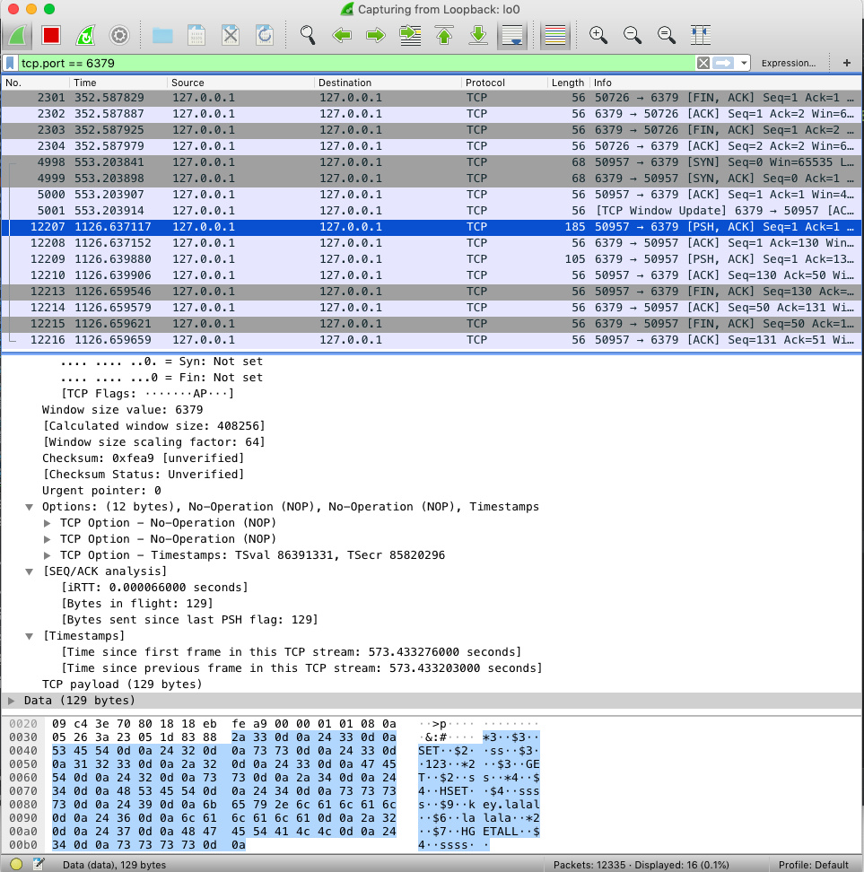
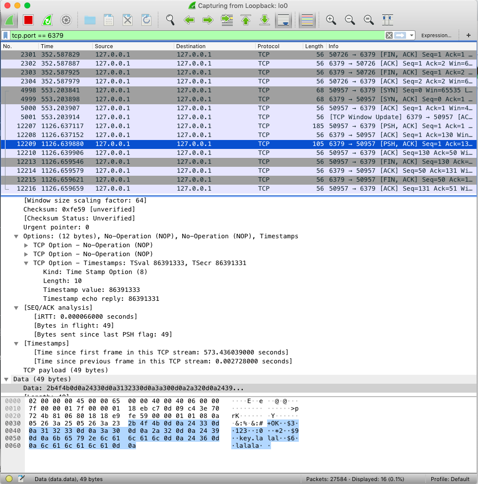

redis pipelining
最近在看python rq的源码，发现它使用了redis pipeline的功能，下面通过文档入手，学习它的原理。
redis网络模型
redis使用的是client-server类型的网络模型，client每个请求便会阻塞等待server响应，server收到请求、处理请求、发送响应给client。很多时候是需要取回多个key，如果client请求1K次，每次的RTT（Round Trip Time）是20ms，那么需要20s才能完成。
针对cs网络模型的改进
针对cs架构的网络，redis使用pipeline来改进。client的1K次请求会一次性发送到server，即使没有读取到server发送回来的响应。当server端收到请求后会在内存里将所有响应放入队列中，再一次性发给client。
pipeline除了会减少RTT，还会减少许多系统调用。因为每一次client发送命令，调用socket的write，这个函数在网络编程中，最终会使用uiomove将数据从用户空间复制到内核空间，然后调用系统调用sosend。
python 使用redis pipeline
1 | import redis |
输出:[True, '123', 1L, {'key.lalal': 'lalala'}]，需要注意的是redis-py的pipeline默认使用transcation，需要将其关闭。
在pipeline中set、get、hset等命令都是会执行self.execute_command('某个命令', *pieces)，因为self此时是一个pipeline对象，因此执行的是pipeline的execute_command
1 | def execute_command(self, *args, **kwargs): |
里面实际执行的是pipeline_execute_command
1 | def pipeline_execute_command(self, *args, **options): |
这里每个命令会被压入pipe对象自己维护的栈中，然后执行pipe.execute()函数
1 | def execute(self, raise_on_error=True): |
主要代码如上，可以看到当没有指定事务模式时，execute使用_execute_pipeline来执行，在_execute_pipeline中将所有comand_stack里面的命令合并成一个命令，发送给redis-server
通过wireshark抓包可以看到：

首先复习一些redis网络协议格式：
1 | *<参数数量> CR LF |
0x0d表示’\r’即CR，0x0a表示’\n’即LF，0x2a表示’*’，0x24表示’$’，因此上面的pcap包里面表示：
- 3个参数的set指令，第一个参数字节数为3，值是SET；第二个参数为2字节，值为ss；第三个参数为3字节，值为123；
- 后面依次
然后我们看服务器的响应

可以看到服务器也是一次性就将所有的响应返回
参考
- redis pipelining 文档 https://redis.io/topics/pipelining
- 本文链接：https://ssdemajia.github.io/2019/05/23/redis-pipelining/
- 版权声明：本站所有文章除特别声明外，均采用 CC BY-NC-SA 3.0 CN 许可协议。转载请注明出处！